Lesson 9: ggplot part 2
Readings
Required:
Review Chapter 1 in in R for Data Science (2e) by Hadley Wickham, Mine Çetinkaya-Rundel & Garrett Grolemund
Skim the The tidyverse style guide for inspiration - you don’t have to read the whole guide carefully
Additional resources:
Announcements
- Assignment 4 due this Thursday
Today’s learning objectives
The goal for today’s class is to return to ggplot to get
more practice with using this package for data visualization, cover a
few additional aspects of its functionality, and integrate the
dplyr data wrangling skills we learned last week to further
customize our plots.
By the end of this class, you should be able to:
- Use different geometric objects and aesthetics to explore various
plot types in
ggplot - Chain together steps for data wrangling (
dplyr) and plotting (ggplot)
If we have time, we will wrap up with a brief discussion of good coding practices.
Acknowledgements: Today’s lecture borrows from several excellent resources including the R for Excel users course by Julia Stewart Lowndes and Allison Horst and Chapter 3 of Grolemund and Wickham’s R for Data Science.
Recap on the Grammar of Graphics implemented in
ggplot
This overview is borrowed from the STAT545 course at UBC

You can think of the grammar of graphics as a systematic approach for describing the components of a graph. It has seven components (the ones in bold are required to be specifed explicitly in ggplot2):
- Data
- Exactly as it sounds: the data that you’re feeding into a plot.
- Aesthetic mappings
- This is a specification of how you will connect variables (columns) from your data to a visual dimension. These visual dimensions are called “aesthetics”, and can be (for example) horizontal positioning, vertical positioning, size, colour, shape, etc.
- Geometric objects
- This is a specification of what object will actually be drawn on the plot. This could be a point, a line, a bar, etc.
- Scales
- This is a specification of how a variable is mapped to its aesthetic. Will it be mapped linearly? On a log scale? Something else?
- Statistical transformations
- This is a specification of whether and how the data are combined/transformed before being plotted. For example, in a bar chart, data are transformed into their frequencies; in a box-plot, data are transformed to a five-number summary.
- Coordinate system
- This is a specification of how the position aesthetics (x and y) are depicted on the plot. For example, rectangular/cartesian, or polar coordinates.
- Facet
- This is a specification of data variables that partition the data into smaller “sub plots”, or panels.
These components are like parameters of statistical graphics, defining the “space” of statistical graphics. In theory, there is a one-to-one mapping between a plot and its grammar components, making this a useful way to specify graphics.
Getting started
We’ll return to exploring the Coronavirus dataset. I’ll try to focus on typical beginner’s errors along the way so we can get used to trouble-shooting together.
First, let’s load our packages and read in our Coronavirus dataset. You can choose to either work in an R-script or an RMarkdown document today.
suppressPackageStartupMessages(library(tidyverse))
suppressPackageStartupMessages(library(knitr))
coronavirus <- read_csv('https://raw.githubusercontent.com/RamiKrispin/coronavirus/master/csv/coronavirus.csv')
# Has it been updated? Check the latest date?
max(coronavirus$date)## [1] "2023-01-04"
Combining dplyr and ggplot
Let’s start with summarizing the total number of cases by type as of the most recent day in the dataset: 2023-01-04. Take a minute to try this for yourself, then you can look at our approach.
click to see our approach
total_cases <- coronavirus |>
group_by(type) |>
summarize(cases = sum(cases))
kable(total_cases) # kable() just provides a nice output for the table| type | cases |
|---|---|
| confirmed | 662136356 |
| death | 7507951 |
| recovery | 0 |
Now, let’s plot the history of the daily counts of new confirmed cases worldwide
# We first have to summarize the data, then plot those summary statistics
# Note that we can pipe dplyr output directly into ggplot
coronavirus |>
filter(type == "confirmed") |>
group_by(date) |>
summarize(total_cases = sum(cases)) |>
ggplot(mapping = aes(x = date, y = total_cases)) +
geom_line()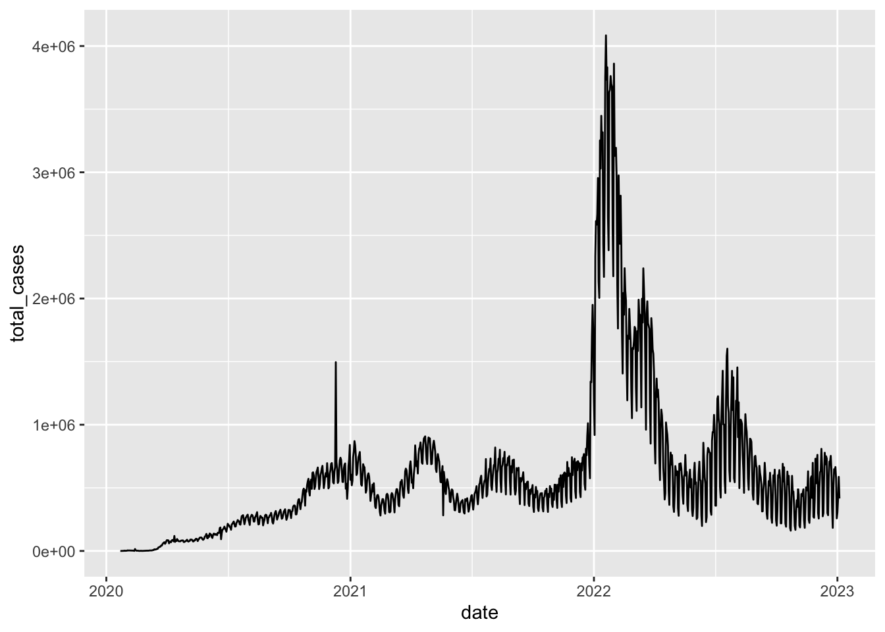
If we want to play around with different geoms, we can store
dplyr data processing steps and initiation of the
ggplot as object gg_base so that we don’t need
to retype it each time
gg_base <- coronavirus |>
filter(type == "confirmed") |>
group_by(date) |>
summarize(total_cases = sum(cases)) |>
ggplot(mapping = aes(x = date, y = total_cases)) Then when we want to draw the plot, we can just call that object and specify the geom
gg_base +
geom_line()
Try these
gg_base +
geom_point()
gg_base +
geom_col(color = "red")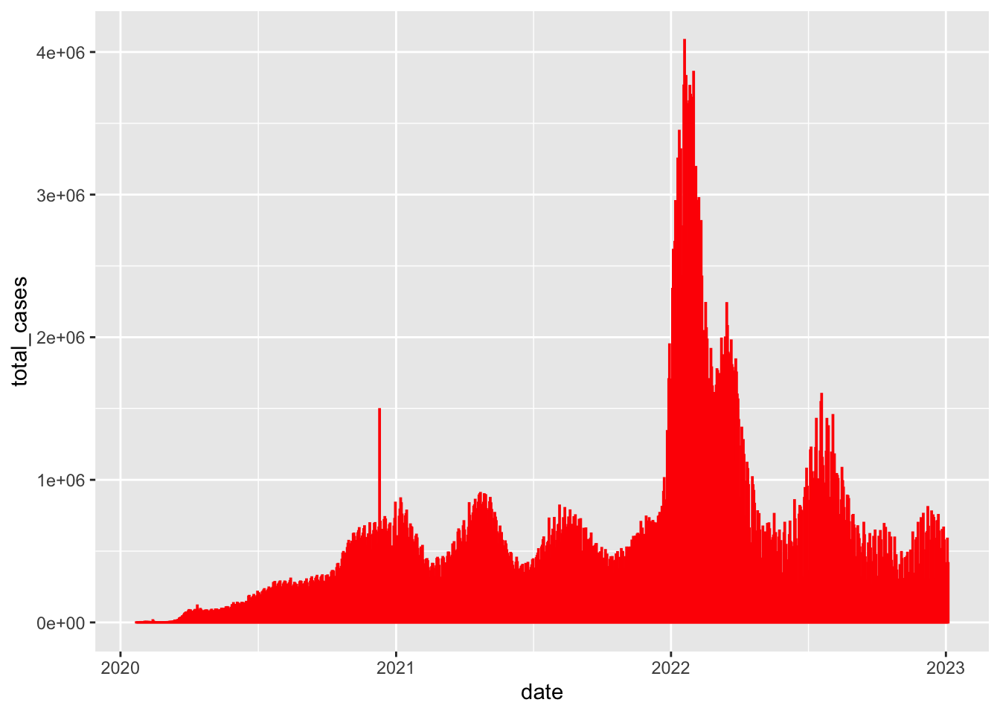
gg_base +
geom_area()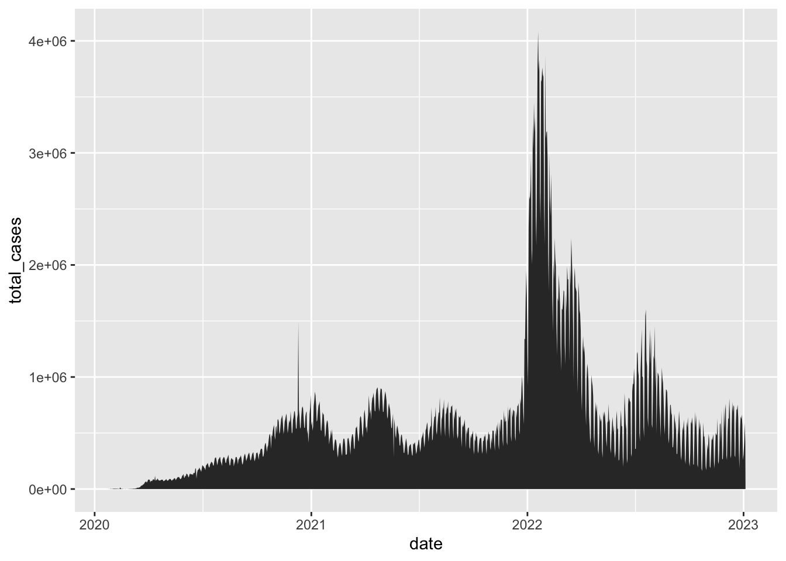
Customizing plots
First, a quick reminder on how we can customize some aesthetics (e.g. colors, styles, axis labels, etc.) of our graphs based on non-variable values.
We can change the aesthetics of elements in a ggplot graph by adding arguments within the layer where that element is created. Some common arguments we’ll use first are:
color =: update point or line colorsfill =: update fill color for objects with areaslinetype =: update the line type (dashed, long dash, etc.)shape =: update the point stylesize =: update the element size (e.g. of points or line thickness)alpha =: update element opacity (1 = opaque, 0 = transparent)
There are many overviews of the different arguments to
linetype, shape etc on the internet, e.g. here.
Building on our first line graph, let’s update the line color to “purple” and make the line type “dashed”:
gg_base +
geom_line(
color = "purple",
linetype = "dashed"
)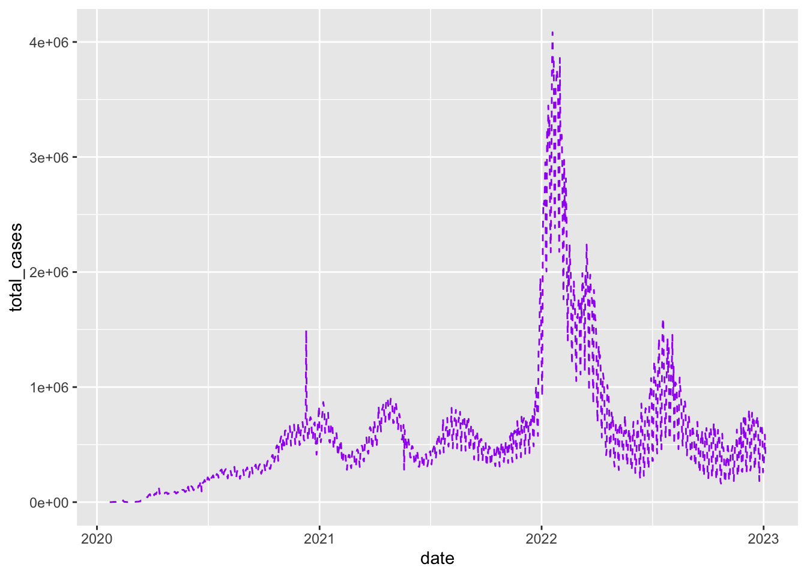
How do we know which color names ggplot will recognize? If you google “R colors ggplot2” you’ll find a lot of good resources. Here’s one: SAPE ggplot2 colors quick reference guide
Now let’s update the point, style and size of points on our previous
scatterplot graph using color =, size =,
alpha =, and shape = (see ?pch
for the different point styles, which can be further customized).
gg_base +
geom_point(color = "purple",
shape = 17,
size = 4,
alpha = 0.5)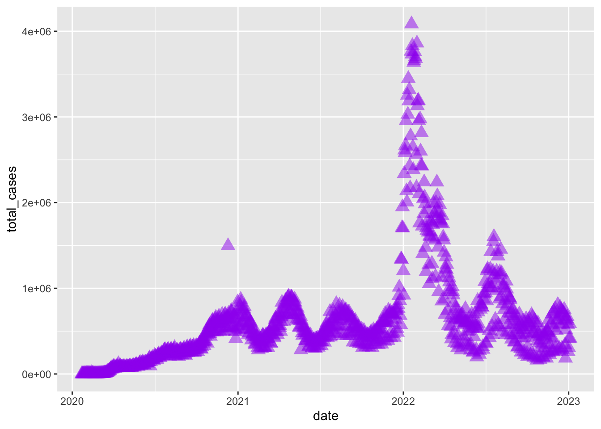
Mapping variables onto aesthetics
In the examples above, we have customized aesthetics based on constants that we input as arguments (e.g., the color / style / size isn’t changing based on a variable characteristic or value). Often, however, we do want the aesthetics of a graph to depend on a variable. To do that (as we’ve discussed earlier), we’ll map variables onto graph aesthetics, meaning we’ll change how an element on the graph looks based on a variable characteristic (usually, character or value).
When we want to customize a graph element based on a variable’s characteristic or value, add the argument within
aes()in the appropriategeom_*()layer. In short, if updating aesthetics based on a variable, make sure to put that argument inside ofaes().
Example: Create a ggplot scatterplot graph where the
size and color of the points change
based on the number of cases, and make all points the
same level of opacity (alpha = 0.5). Notice the
aes() around the size = and
color = arguments.
Note: this is just for illustration of the functionality only - we are showing the same information in redundant ways, which is typically not helpful or necessary. Avoid excessive / overcomplicated aesthetic mapping in data visualization.
gg_base +
geom_point(
aes(size = total_cases,
color = total_cases),
alpha = 0.5
)In the example above, notice that the two arguments that
do depend on variables are within aes(),
but since alpha = 0.5 doesn’t depend on a variable then it
is outside the aes() but still within the
geom_point() layer.
When we map variables to aesthetics, ggplot2 will
automatically assign a unique level of the aesthetic (here a unique
color) to each unique value of the variable, a process known as scaling.
ggplot2 will also add a legend that explains which levels
correspond to which values.
ggplot2 complete themes
While every element of a ggplot graph is manually customizable, there
are also built-in themes (theme_*()) that you can add to
your ggplot code to make some major headway before making smaller tweaks
manually.
We talked about this briefly a few classes ago, but let’s explore a
little further. Here are a few to try today (but also notice all the
options that appear as we start typing theme_ into our
ggplot graph code!):
theme_light()theme_minimal()theme_bw()
Also, check out more examples by scrolling down here. Pick one that you like and update your previous plot.
Here, let’s update our previous graph with
theme_minimal():
gg_base +
geom_point(
aes(size = total_cases,
color = total_cases),
alpha = 0.5
) +
theme_minimal()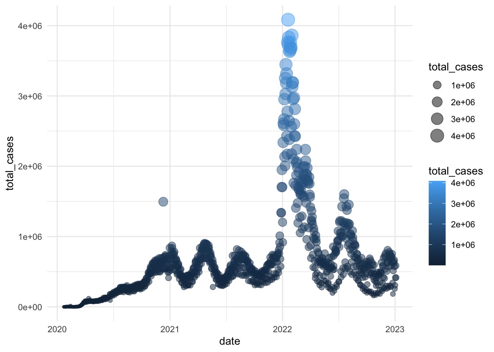
You can play around with other themes - see an overview and instructions for how to customize themes here and here.
We could for example color the background of the legend
gg_base +
geom_point(
aes(size = total_cases,
color = total_cases),
alpha = 0.5) +
theme_minimal() +
theme(legend.background = element_rect(
fill = "lemonchiffon",
colour = "grey50",
linewidth = 1
))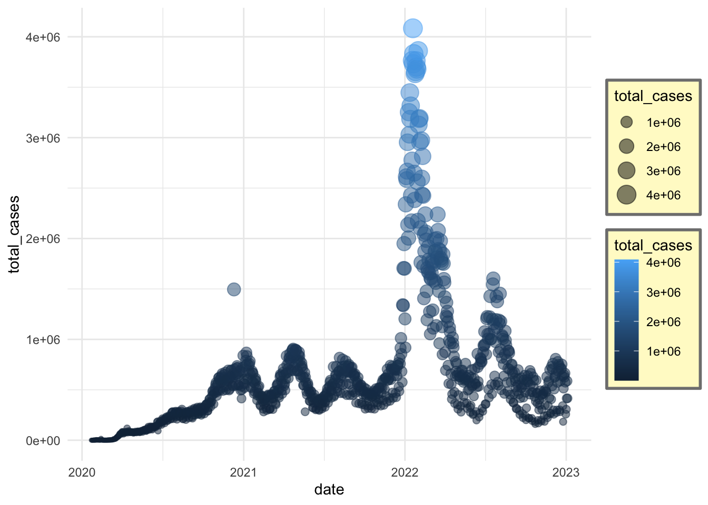
Or we can remove the legend
gg_base +
geom_point(
aes(size = total_cases,
color = total_cases),
alpha = 0.5) +
theme_minimal() +
theme(legend.position = "none")In addition to the themes built into ggplot, there are lots packages that implement additional fun themes, see some examples here
Updating axis labels and titles
Use labs() to update axis labels, and add a title and/or
subtitle to your ggplot graph.
gg_base +
geom_line(linetype = "dotted") +
theme_bw() +
labs(
x = "Date",
y = "Total confirmed cases",
title = str_c("Daily counts of new Coronavirus cases recorded per ", max(coronavirus$date)),
subtitle = "Global sums")Note: If you want to update the formatting of axis
values (for example, to convert to comma format instead of scientific
format above), you can use the scales package options and
add + scale_y_continuous(labels = scales::comma) (see more
from the R
Cookbook).
Now, let’s split the case counts out by country
Your turn
Take a minute to think about how you would generate a plot with a separate line showing the daily reports of new confirmed cases in each country.
Here is some code we might try. Why does that not work?
coronavirus |>
filter(type == "confirmed") |>
group_by(date) |>
summarize(total_cases = sum(cases)) |>
ggplot() +
geom_line(mapping = aes(x = date, y = total_cases, color = country))
# We have summarized out the country details (only one total count per day)We’ll have to group by both country and date. But why does this not work?
coronavirus |>
filter(type == "confirmed") |>
group_by(country, date) |>
summarize(total_cases = sum(cases)) |>
ggplot(mapping = aes(x = date, y = total_cases)) +
geom_line()
# Even though we have grouped the dataframe by country, that dplyr grouping does not get carried into ggplotNow let’s make ggplot group the data too by mapping country onto an aesthetic
coronavirus |>
filter(type == "confirmed") |>
group_by(country, date) |>
summarize(total_cases = sum(cases)) |>
ggplot(mapping = aes(x = date, y = total_cases, color = country)) +
geom_line()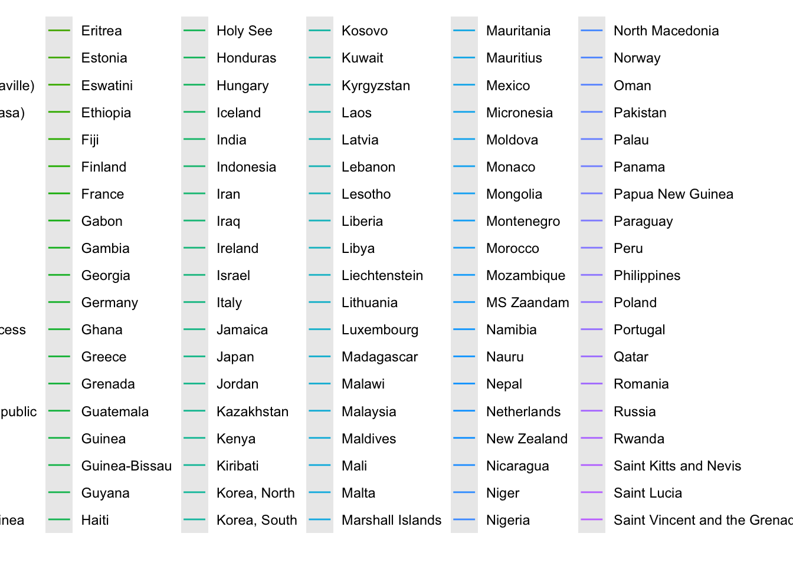
It looks like this is doing what we want, but it does not display well. There are too many countries! We could play around with the layout parameters to be able to see this plot. But let’s instead subset to only show the 5 countries with the highest total counts of confirmed cases.
top5_countries <- coronavirus |>
filter(type == "confirmed") |>
group_by(country) |>
summarize(total_cases = sum(cases)) |>
arrange(-total_cases) |>
head(5) |>
pull(country)Now let’s try to plot the daily counts of new cases just for those countries
coronavirus |>
filter(type == "confirmed", country %in% top5_countries) |>
group_by(country, date) |>
summarize(total_cases = sum(cases)) |> # Need this summarize because some countries have data broken down by Province.State
ggplot(mapping = aes(x = date, y = total_cases, color = country)) +
geom_line()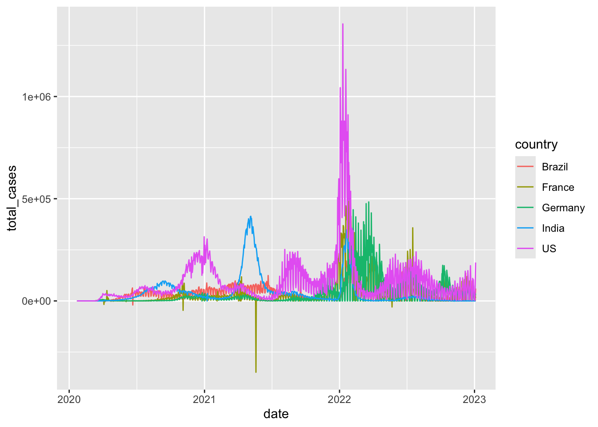
Much better! But it looks messy because there are large large negative values reported for certain days. Why could that be? In a real data analysis, we would want to account for that, but for display purposes, let’s just remove those rows from our dataset for now.
coronavirus |>
filter(type == "confirmed", country %in% top5_countries, cases >= 0) |>
group_by(country, date) |>
summarize(total_cases = sum(cases)) |> # Need this summarize because some countries have data broken down by Province.State
ggplot(mapping = aes(x = date, y = total_cases, color = country)) +
geom_line()We can also make a separate panel for each country
coronavirus |>
filter(type == "confirmed", country %in% top5_countries, cases >= 0) |>
group_by(country, date) |>
summarize(total_cases = sum(cases)) |>
ggplot(mapping = aes(x = date, y = total_cases)) +
geom_line() +
facet_wrap(~country)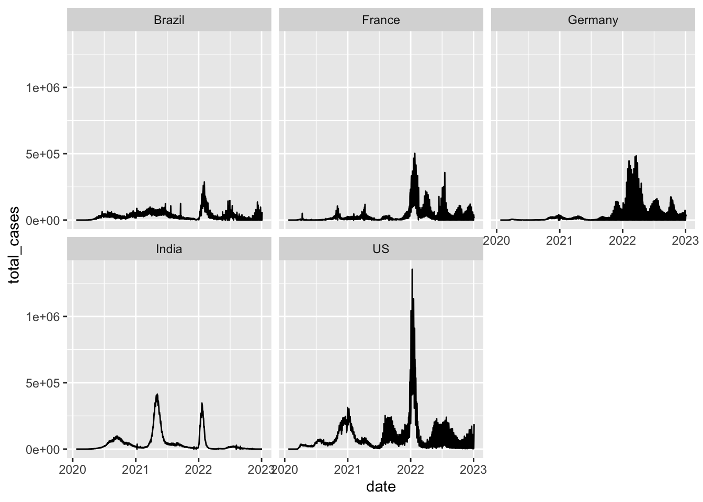
Now let’s plot the cumulative sum of cases for each of those countries instead
coronavirus |>
filter(type == "confirmed", country %in% top5_countries, cases >= 0) |>
group_by(country) |>
arrange(date) |>
mutate(cum_count = cumsum(cases)) |>
ggplot(mapping = aes(x = date, y = cum_count, color = country)) +
geom_line()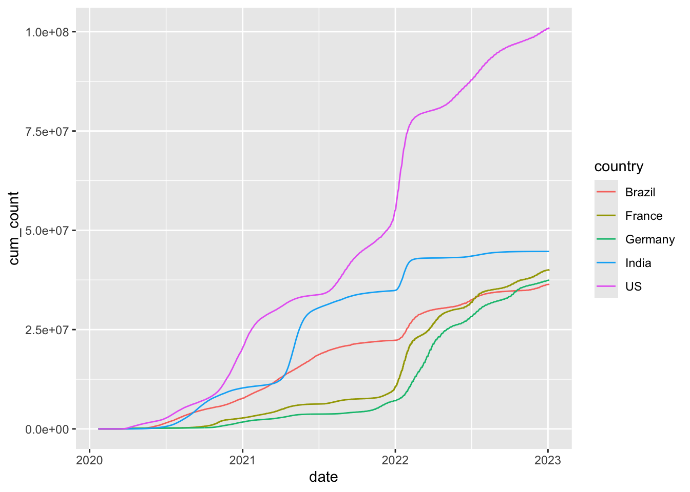
Bar charts
Another common plot type are bar charts. There are two types of bar
charts in ggplot: geom_bar() and
geom_col(). geom_bar() makes the height of the
bar proportional to the number of records in each group (or if the
weight aesthetic is supplied, the sum of the weights). If you want the
heights of the bars to represent values in the data, use
geom_col() instead.
Since our dataset reports counts of cases, let’s first start with
geom_col() Let’s compare the total number of cases in each
of the top 5 countries with the highest total counts
coronavirus |>
filter(type == "confirmed", country %in% top5_countries, cases >= 0) |>
group_by(country) |>
summarize(cases = sum(cases)) |>
ggplot() +
geom_col(aes(x = country, y = cases), color = "black")
Next, let’s make a stacked barplot that also shows the total number
of deaths in each country. First we’ll need to compute the total counts
for each type of case, then we can use the fill aesthetic
to create the stacked bars
coronavirus |>
filter(type == "confirmed" | type == "death", country %in% top5_countries, cases >= 0) |>
group_by(country, type) |>
summarize(cases = sum(cases)) |>
ggplot() +
geom_col(aes(x = country, y = cases, fill = type))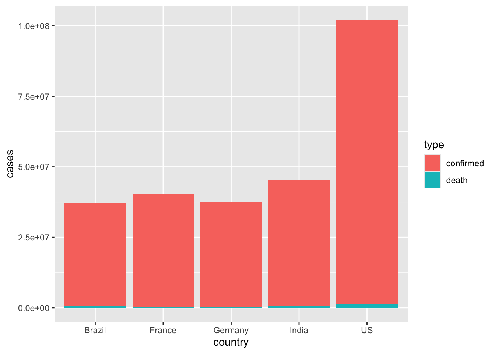
We may want to flip this around
coronavirus |>
filter(type == "confirmed" | type == "death", country %in% top5_countries, cases >= 0) |>
group_by(country, type) |>
summarize(cases = sum(cases)) |>
ggplot() +
geom_col(aes(x = country, y = cases, fill = type)) +
coord_flip()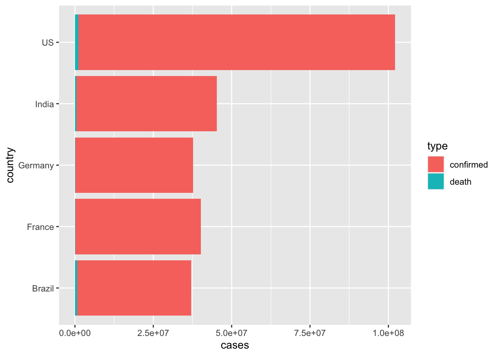
This is useful because it puts the proportions in relation to the total daily counts. But it can be hard to compare proportions. We can make all bars the same height with ‘position adjustment’
coronavirus |>
filter(type == "confirmed" | type == "death", country %in% top5_countries, cases >= 0) |>
group_by(country, type) |>
summarize(cases = sum(cases)) |>
ggplot() +
geom_col(aes(x = country, y = cases, fill = type), position = "fill") +
coord_flip()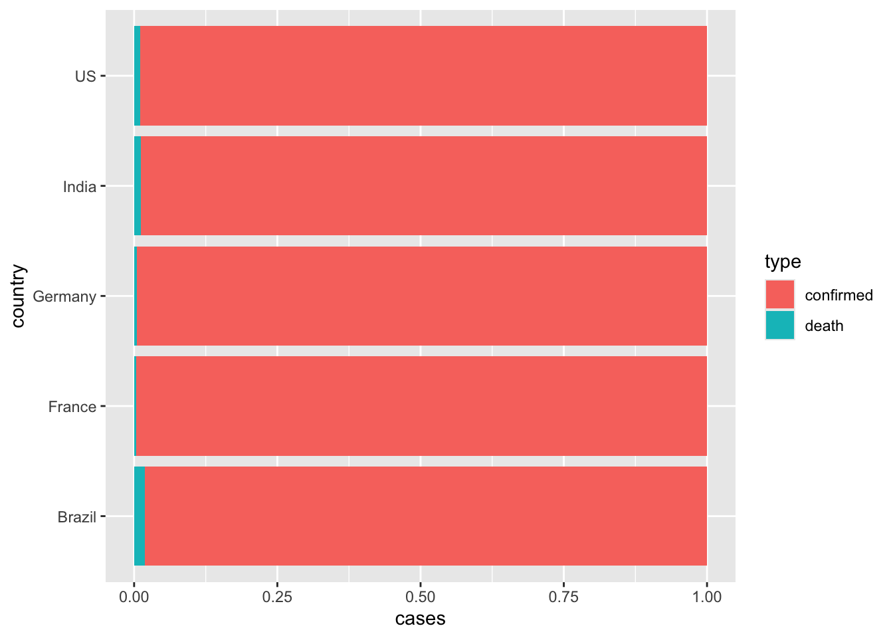
While looking at the proportions of case types is helpful for
comparing patterns, it doesn’t allow for comparison of the magnitude of
case counts. We can do this better by scaling the bars by the raw case
counts (not mapping a variable to the fill aesthetic), as
we did above.
We can also get the bars for the different types of cases each day stacked next to each other with another position adjustment option
coronavirus |>
filter(type == "confirmed" | type == "death", country %in% top5_countries, cases >= 0) |>
group_by(country, type) |>
summarize(cases = sum(cases)) |>
ggplot() +
geom_col(aes(x = country, y = cases, fill = type), position = "dodge")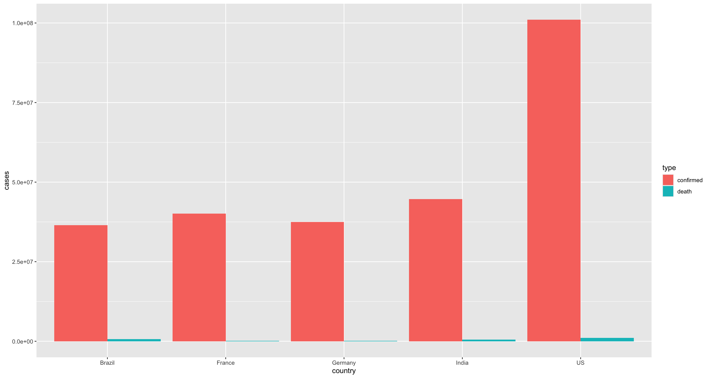
Now, let’s explore a different question. Let’s compare for how many
days each of the top five countries have had > 100,000 new confirmed
cases. For this we will need to count rows within grouped variables, so
we’ll use the geom_bar()
coronavirus |>
filter(type == "confirmed", country %in% top5_countries, cases >= 0) |>
group_by(date, country) |>
summarize(cases = sum(cases)) |>
filter(cases >100000) |>
ggplot() +
geom_bar(aes(country))
Alternatively, we could also pre-compute these counts and plot them
with geom_col() like above, but sometimes it’s convenient
to have ggplot compute the counts of observations directly with
geom_bar()
coronavirus |>
filter(type == "confirmed", country %in% top5_countries, cases >= 0) |>
group_by(date, country) |>
summarize(cases = sum(cases)) |>
filter(cases >100000) |>
# note here that we need to change the grouping to now just be by country
group_by(country) |>
summarize(count = n()) |>
ggplot() +
geom_col(aes(country, y = count))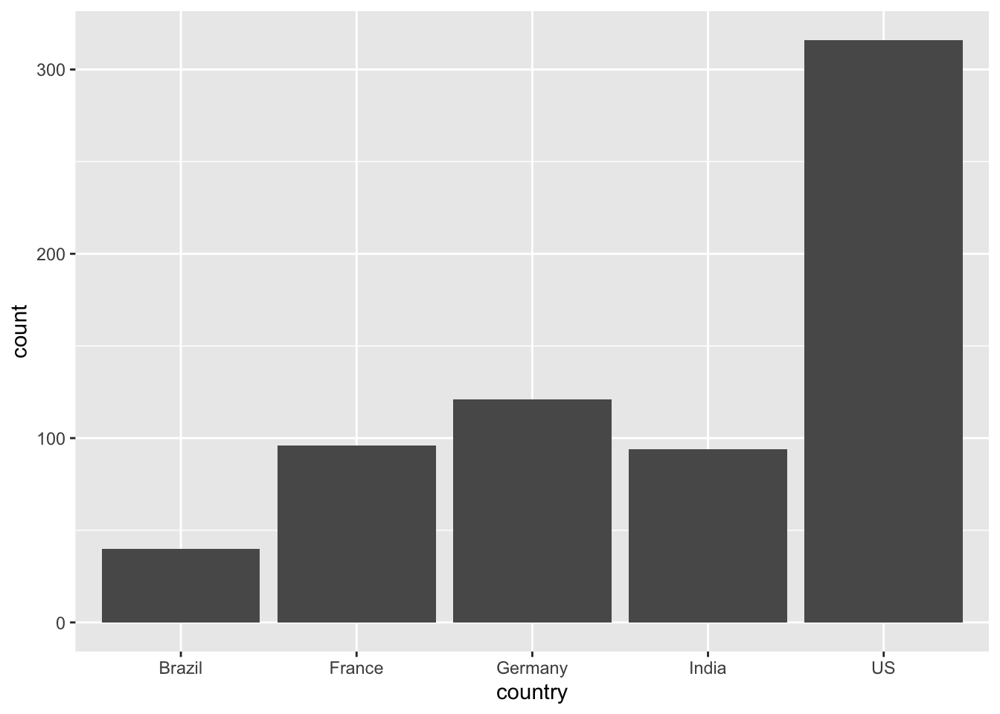
Plotting with labels
To explore different types of x-y scatterplots, let’s return to the vaccination data we also looked at during the last lecture. Let’s first load it back in:
vacc <- read_csv("https://raw.githubusercontent.com/RamiKrispin/coronavirus/main/csv/covid19_vaccine.csv")Remember, this dataset shows cumulate counts, so let’s grab the counts from the most recent date included in the dataset 2023-03-09. We’ll also remove rows with missing data for variables we need (this is typically not necessary as those lines will automatically be excluded from plots, but we do it here because some of those rows have extreme values for other variables)
# create a "total to date" subset of the data
vacc_ttd <- vacc |>
filter(date == max(date), !is.na(people_at_least_one_dose), !is.na(population))
# Let's look at our new tibble so make sure it makes sense
vacc_ttd## # A tibble: 191 × 15
## date country_region continent_name continent_code combined_key
## <date> <chr> <chr> <chr> <chr>
## 1 2023-03-09 Afghanistan Asia AS Afghanistan
## 2 2023-03-09 Albania Europe EU Albania
## 3 2023-03-09 Algeria Africa AF Algeria
## 4 2023-03-09 Andorra Europe EU Andorra
## 5 2023-03-09 Angola Africa AF Angola
## 6 2023-03-09 Antigua and Barbuda North America <NA> Antigua and Bar…
## 7 2023-03-09 Argentina South America SA Argentina
## 8 2023-03-09 Armenia Asia AS Armenia
## 9 2023-03-09 Australia Oceania OC Australia
## 10 2023-03-09 Austria Europe EU Austria
## # ℹ 181 more rows
## # ℹ 10 more variables: doses_admin <dbl>, people_at_least_one_dose <dbl>,
## # population <dbl>, uid <dbl>, iso2 <chr>, iso3 <chr>, code3 <dbl>,
## # fips <lgl>, lat <dbl>, long <dbl>We can start by just making a simple plot of the number of fully vaccinated people vs. the total population size in different countries
vacc_ttd |>
ggplot() +
geom_point(mapping = aes(population, people_at_least_one_dose))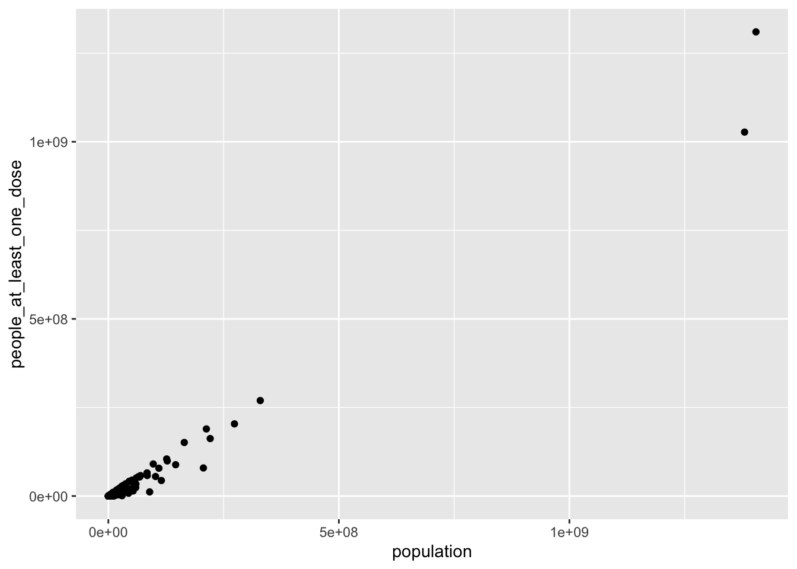
That’s nice, but it would be useful to know which country is
represented by each dot. geom_label() is our tool for
that.
vacc_ttd |>
ggplot() +
geom_label(mapping = aes(population, people_at_least_one_dose, label = country_region))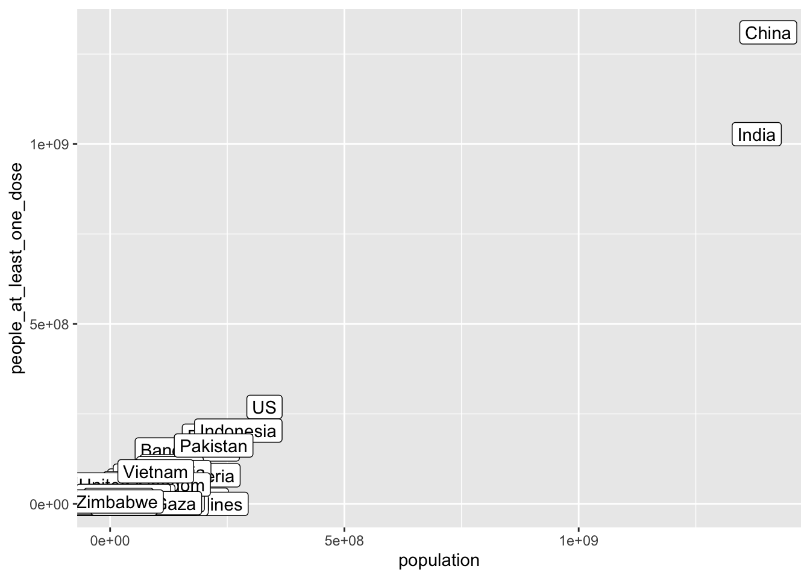
Let’s do a few things to make this easier to read
We can remove countries with a small population sizes, and log transform the population sizes
vacc_ttd |>
filter(population > 50000000) |>
ggplot() +
geom_label(mapping = aes(log(population), people_at_least_one_dose, label = country_region))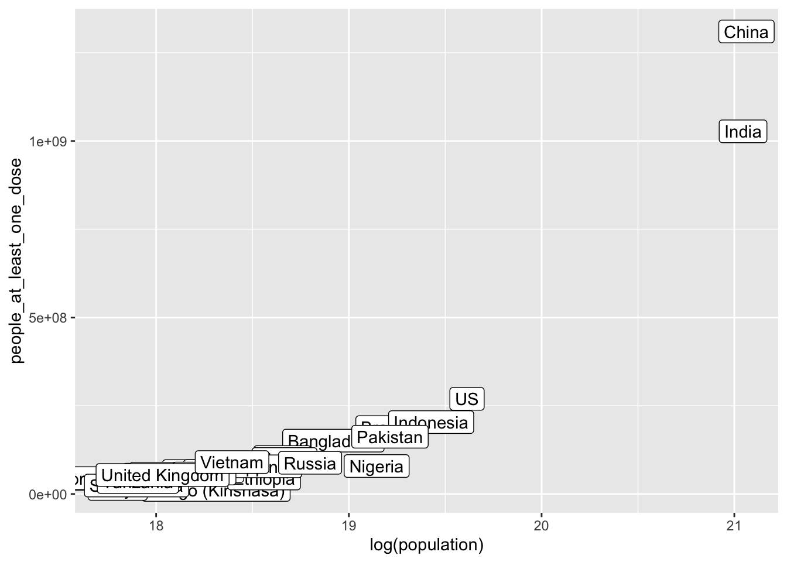
Or, we can zoom in on the part of the plot where almost all countries other than China and India are clustered together. We can do this in a few different ways. One is to just filter out rows with large population size (e.g. countries with population sizes over 500 million).
vacc_ttd |>
filter(population < 5*10^8) |>
ggplot() +
geom_label(mapping = aes(population, people_at_least_one_dose, label = country_region))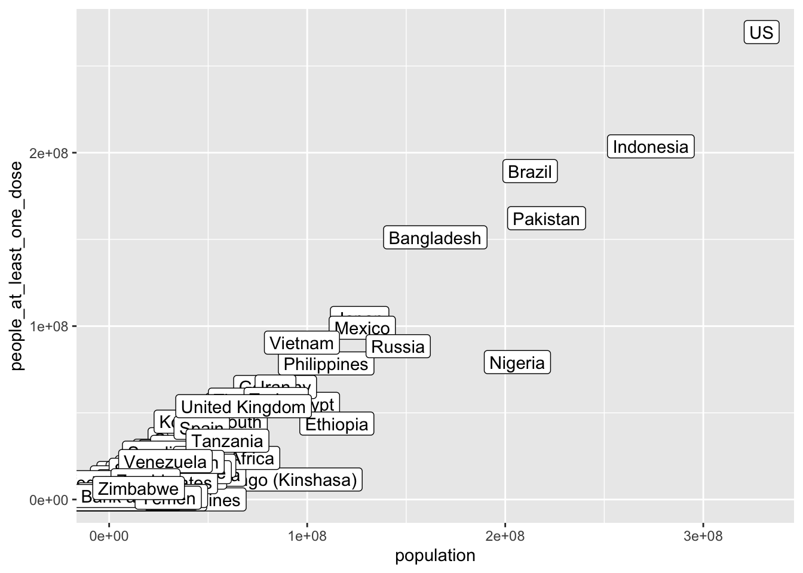
Or we can just zoom in by adjusting what parts of the axes to display
vacc_ttd |>
ggplot() +
geom_label(mapping = aes(population, people_at_least_one_dose, label = country_region)) +
coord_cartesian(xlim = c(0,4*10^8), ylim = c(0, 3*10^8))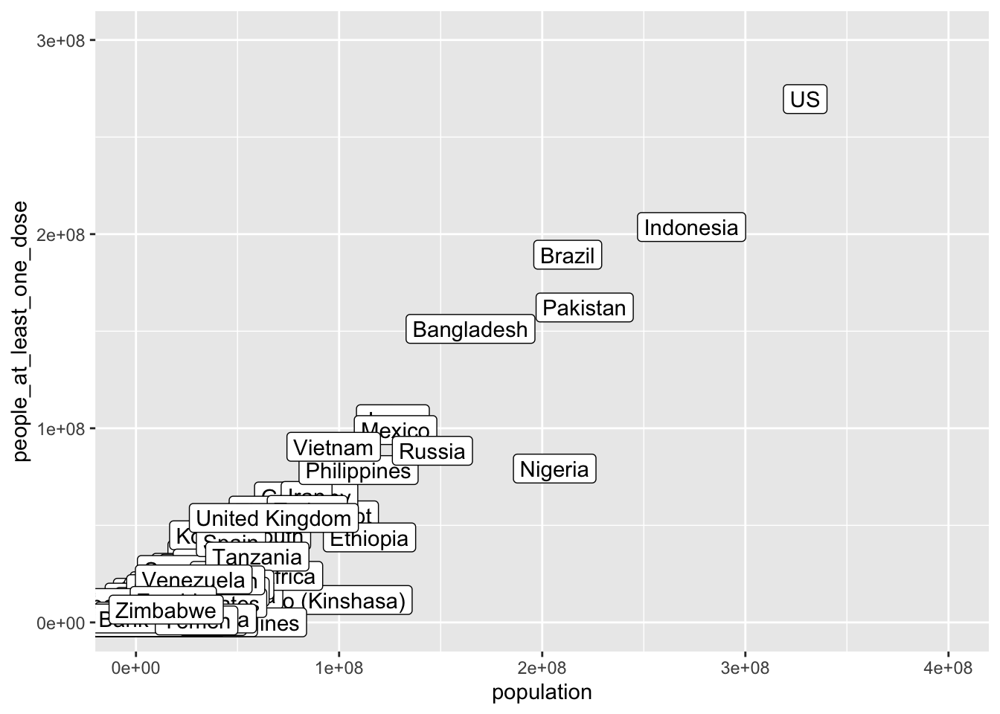
There are lots of other ways we can adjust label plotting. See e.g. here or a more comprehensive overview in the book chapter 8 of the book “ggplot2: Elegant Graphics for Data Analysis”
Bonus: Spatial plotting
Map of newly reported cases
With some additional packages, we can also plot geographical patterns on a map. We can, for example, show which countries have new counts of >5000 new confirmed cases on the most recent day from this dataset and scale the points with case counts.
library("rnaturalearth") # install.packages("rnaturalearth")
library("rnaturalearthdata") # install.packages("rnaturalearthdata")
library("rgeos") #install.packages("rgeos")
world <- ne_countries(scale = "medium", returnclass = "sf")
filter(coronavirus, date == max(coronavirus$date), type == "confirmed", cases > 5000) |>
ggplot() +
geom_sf(data = world) +
geom_point(aes(x=long, y=lat, size=cases), color="red", fill="red", alpha=0.5, shape=21)
Exercise
Come up with an interesting question you want to explore in the Coronavirus dataset with a plot. Try to figure out how to plot it (remember: Google is your friend).
Examples of questions you could explore:
We saw earlier that India has had a lower death count per number of confirmed cases than other countries, while Mexico had a higher death count per number of confirmed cases. Has this been a consistent pattern throughout the pandemic?
For how long has the US been the country with the greatest number of confirmed cases?
Have the global daily death counts peaked and declined or are they still rising? What about within individual countries?
Some example plots:
Trend in cumulative case count
## linear scale
group_by(coronavirus, date, type) |>
summarise(cases = sum(cases)) |>
group_by(type) |>
mutate(cases=cumsum(cases)) |>
ggplot() +
geom_line(aes(x=date, y=cases, color=type))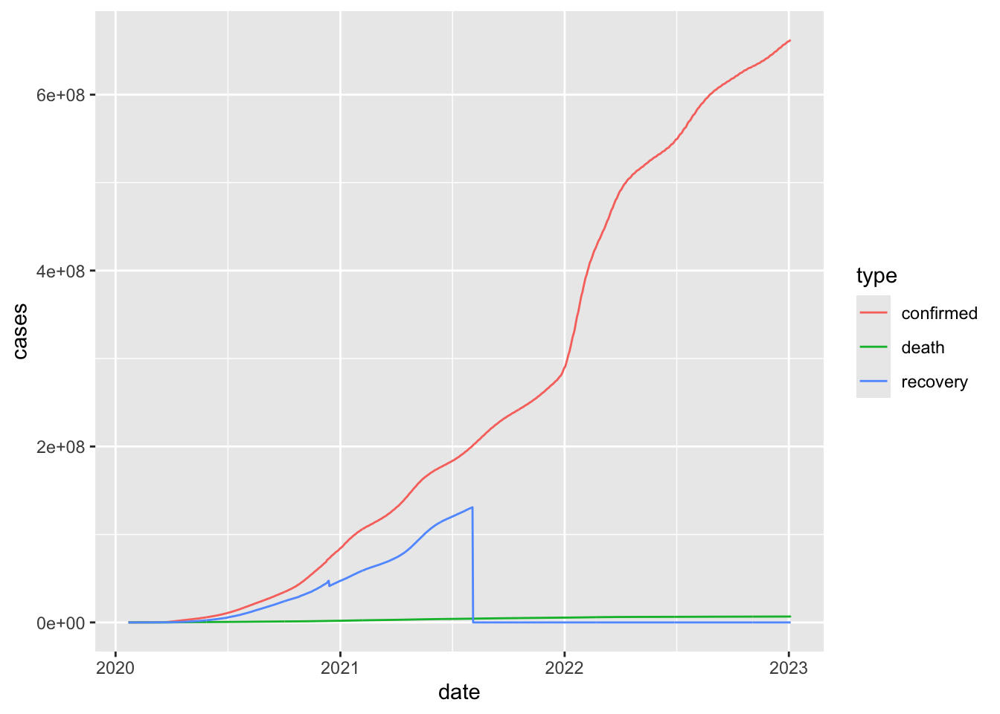
## log scale
group_by(coronavirus, date, type) |>
summarise(cases = sum(cases)) |>
group_by(type) |>
mutate(cases=cumsum(cases)) |>
ggplot() +
geom_line(aes(x=date, y=log(cases), color=type))## Warning in log(cases): NaNs produced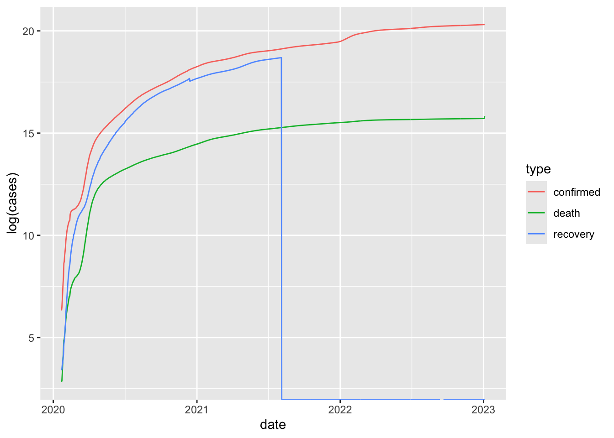
Trend in cumulative case count in the 5 most infected countries
## linear scale
filter(coronavirus, country %in% top5_countries) |>
group_by(country, date, type) |>
summarise(cases = sum(cases)) |>
group_by(country, type) |>
mutate(cases=cumsum(cases)) |>
ggplot() +
geom_line(aes(x=date, y=cases/1000, color=type)) +
ylab("cumulative count (in thousand)") +
facet_wrap(~country, scales = "free_y")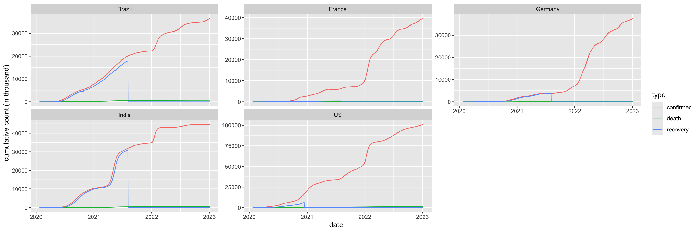
Trend in cumulative death rate
group_by(coronavirus, date, type) |>
summarise(cases = sum(cases)) |>
group_by(type) |>
mutate(cases=cumsum(cases)) |>
pivot_wider(names_from = type, values_from = cases) |>
mutate(death_rate = death/confirmed) |>
ggplot(aes(x=date, y=death_rate)) +
geom_line()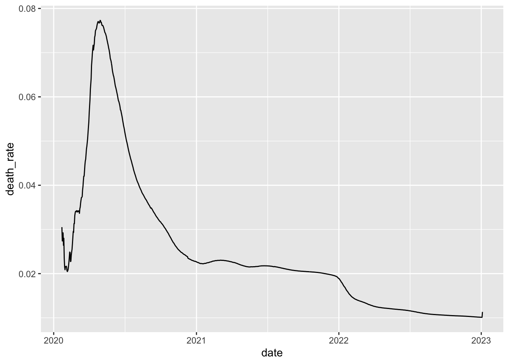
Trend in cumulative death rate in 5 most infected countries
filter(coronavirus, country %in% top5_countries) |>
group_by(country, date, type) |>
summarise(cases = sum(cases)) |>
group_by(country, type) |>
mutate(cases=cumsum(cases)) |>
pivot_wider(names_from = type, values_from = cases) |>
mutate(death_rate = death/confirmed) |>
ggplot(aes(x=date, y=death_rate)) +
geom_line() +
facet_wrap(~country, scales = "free_y")## Warning: Removed 35 rows containing missing values or values outside the scale range
## (`geom_line()`).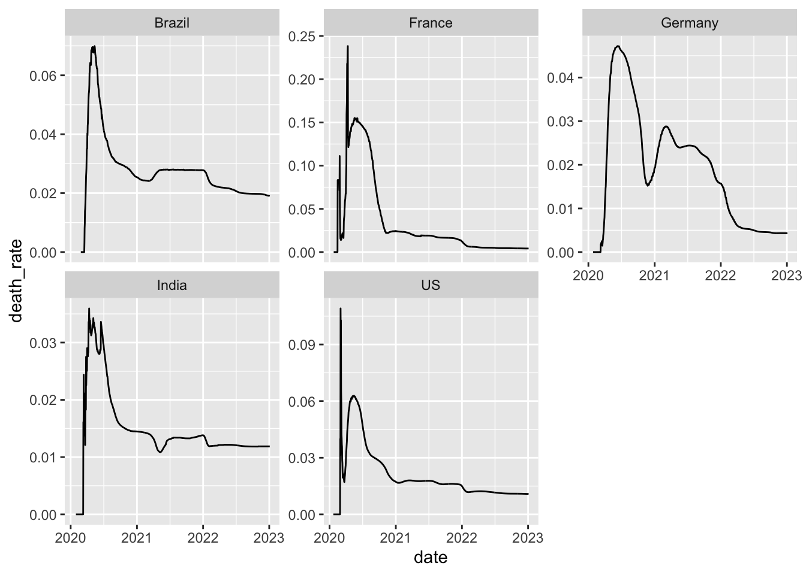